Wings · Evidencia Visual: ANTES vs DESPUÉS
Paquete de 9 defectos móviles resueltos con enfoque compartido. Capturas obtenidas del sistema real andando en base de pruebas mediante Chrome Headless a 1280px y celular a 375px dentro de marco iframe.
Comprobación canónica exigida por AGENTS.md: la pantalla de login entra 100% íntegra y centrada a 375px, validando que el método de marco mide la realidad del dispositivo sin recortar falsamente.
Celular 375 px ANTES
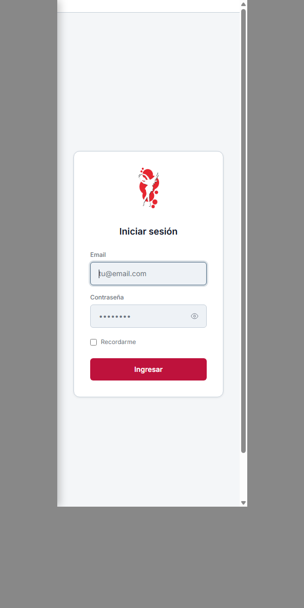
Celular 375 px DESPUÉS
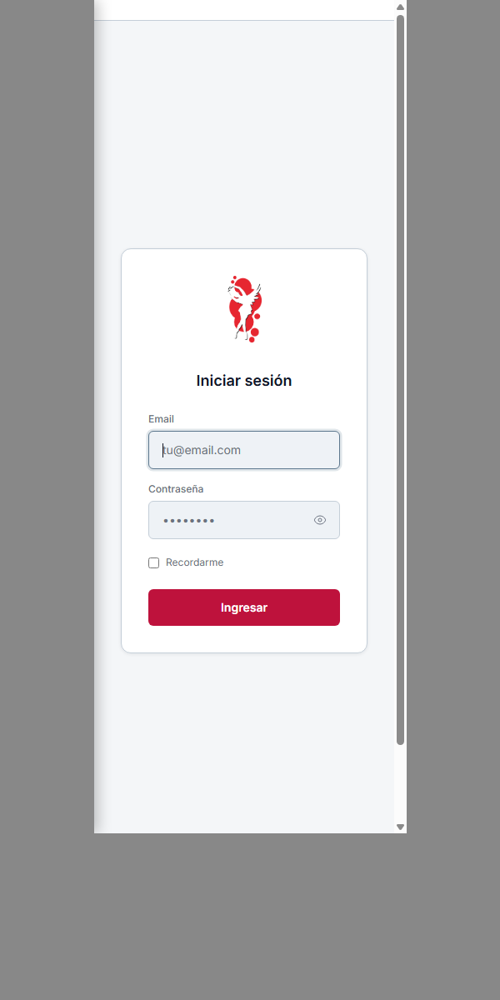
Antes: El importe $1.263.000 se desbordaba por la derecha de la tarjeta debido a una tipografía fija de 1.6rem.
Después: Se implementó clamp(1.1rem, 4vw, 1.6rem) y contención por tarjeta. La cifra se adapta fluidamente a los 155px disponibles sin salirse de la caja.
Celular 375 px ANTES (Desbordaba)
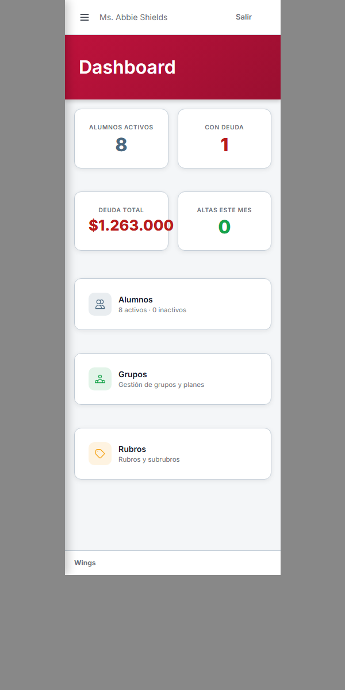
Celular 375 px DESPUÉS (Dentro de card)
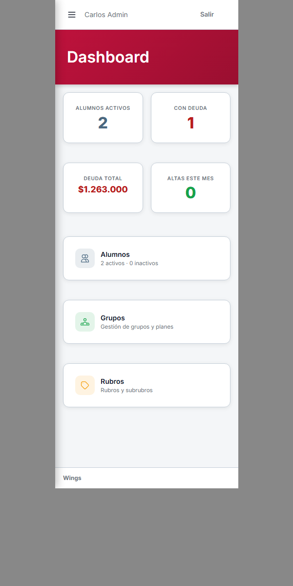
Antes: Los valores y el botón "Nuevo" se montaban sobre el saldo inicial y lo tapaban.
Después: stats-bar responsiva (columna en celular, fila en desktop), etiquetas uppercase estilizadas con iconos SVG estándar y botón "Nuevo" ubicado abajo a la derecha accesible.
Celular 375 px ANTES (Se montaba)
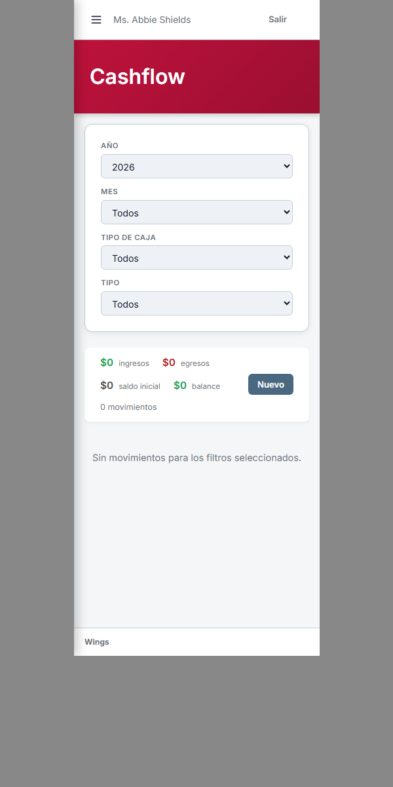
Celular 375 px DESPUÉS (Limpio y ordenado)
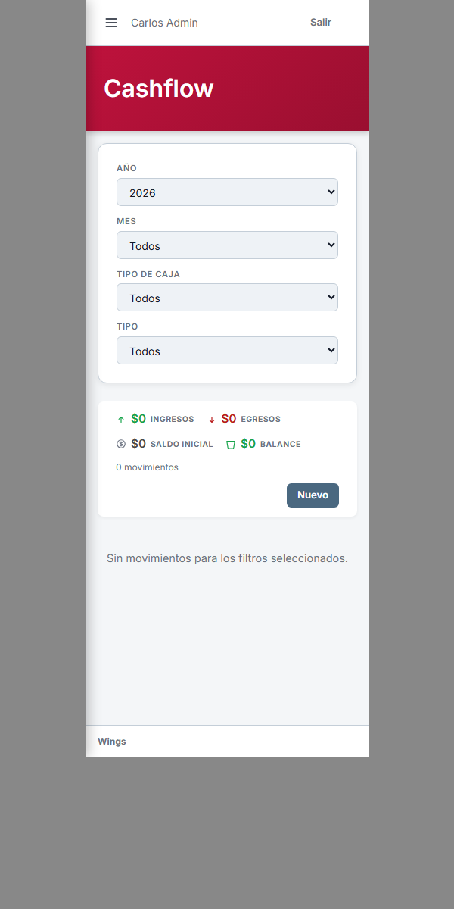
Antes: Formulario sin iconos en labels, observaciones marcado como obligatorio con asterisco, y botones de acción sin alinear.
Después: Todos los labels cuentan con sus iconos SVG estándar del design system, campo Observaciones ahora es opcional con placeholder explicativo, JS inline extraído a resources/js/caja-movimiento.js compilado en Vite y botones alineados a la derecha.
Celular 375 px ANTES
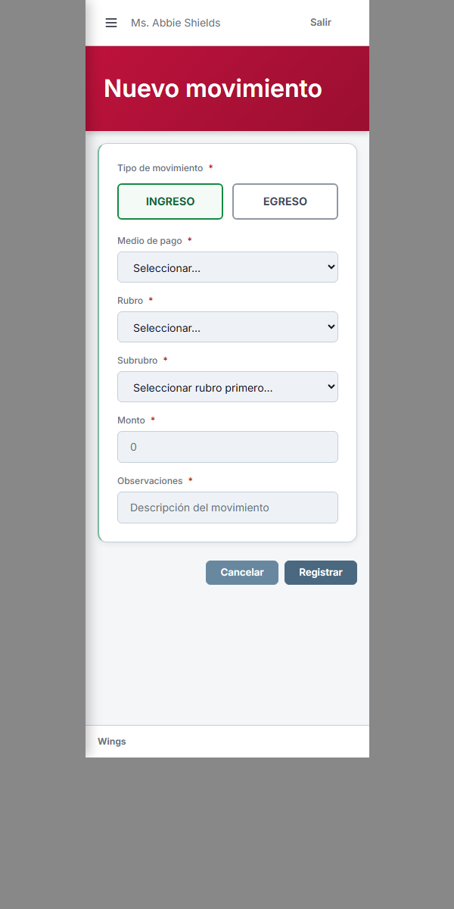
Celular 375 px DESPUÉS
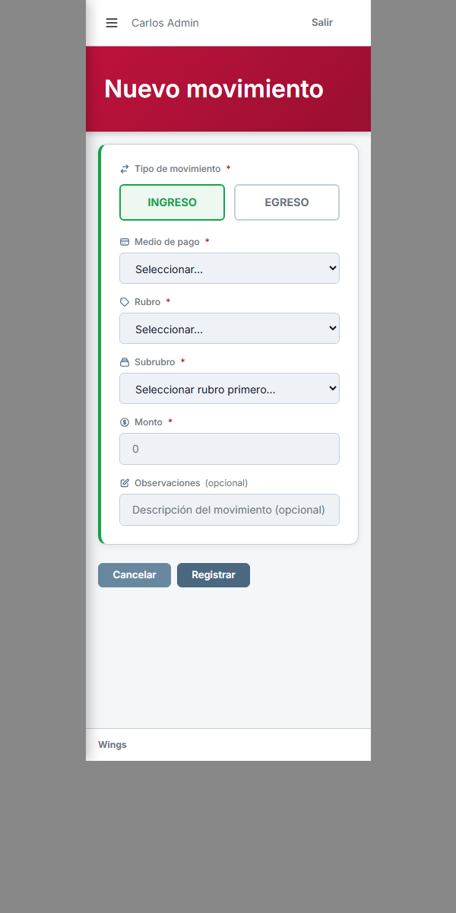
Antes: Forzaba 3 columnas fijas en cualquier ancho, cortando nombres de planes ("Principiante $..."). El switch Activo estaba pegado a Editar.
Después: alumno-info se apila en 1 columna en móvil y 3 en desktop. Los planes se leen íntegros. El switch Activo queda separado a la izquierda y los botones de acción alineados a la derecha.
Celular 375 px ANTES (Datos cortados)
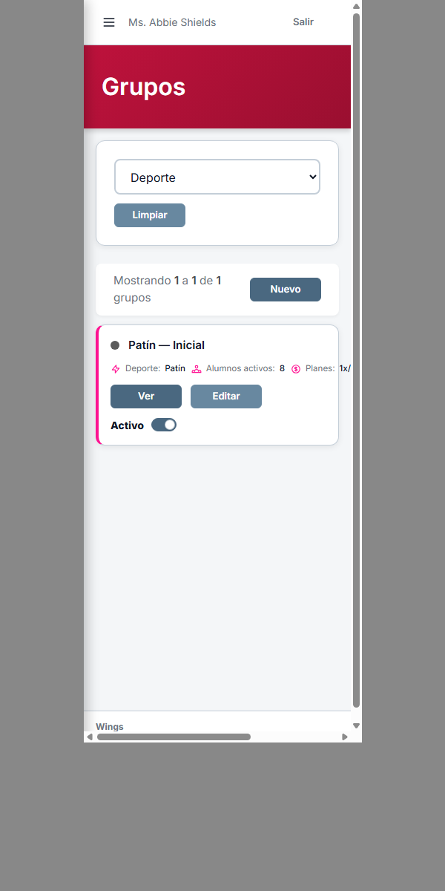
Celular 375 px DESPUÉS (Datos completos)
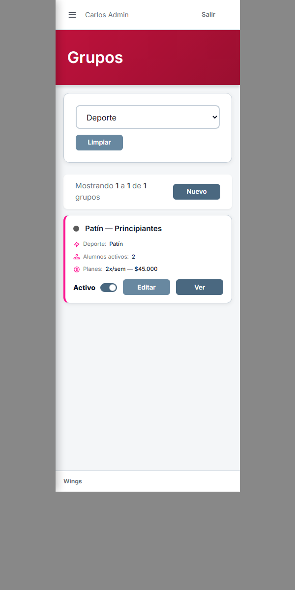
Antes: Las tarjetas de alumnos con deuda dividían la información en columnas angostas que comprimían los saldos y grupos.
Después: Información apilada en móvil, saldos claros y botones [Ver] y [Cobrar] alineados a la derecha al alcance del pulgar.
Celular 375 px ANTES
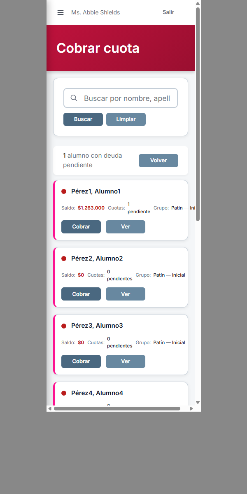
Celular 375 px DESPUÉS
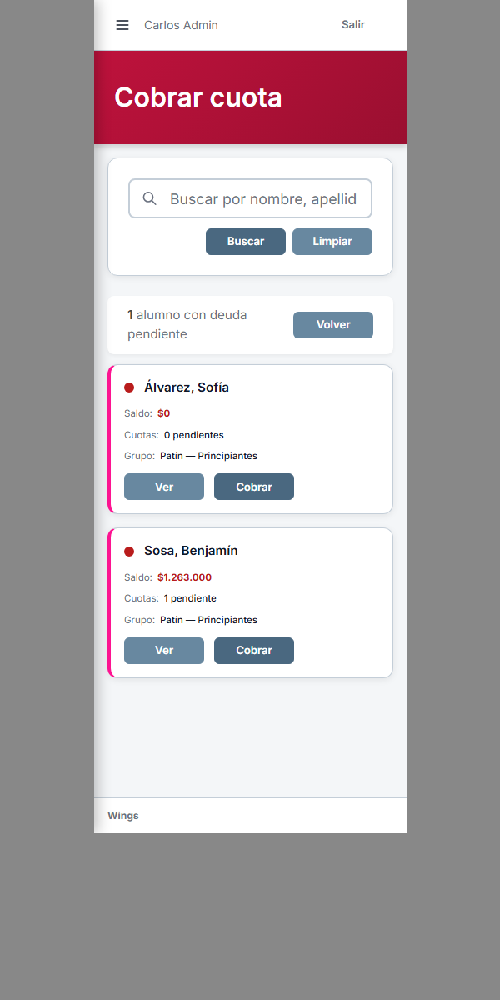
Antes: Cada alumno ocupaba 140px de alto con 3 filas y bordes internos innecesarios, requiriendo desplazamiento masivo de pantalla.
Después: Fila compacta de ~54px por alumno (dot + nombre en fila superior, plan y DNI en subtítulo inferior, y checkbox Presente a la derecha). Entran 5 a 6 alumnos por pantalla. Botones superiores de la clase alineados a la derecha.
Celular 375 px ANTES (140px / alumno)
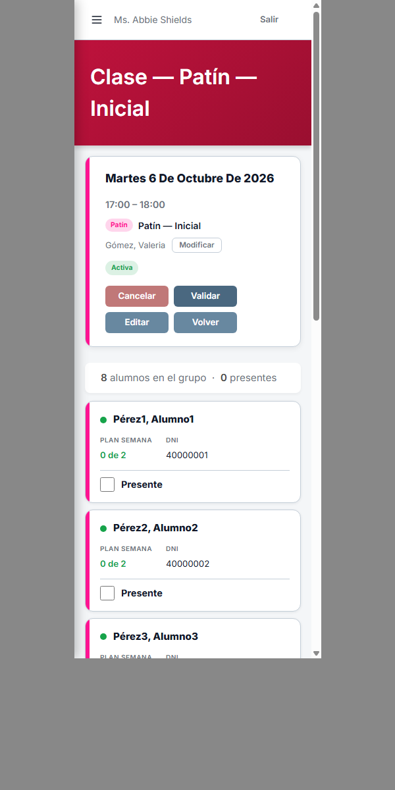
Celular 375 px DESPUÉS (54px / alumno)
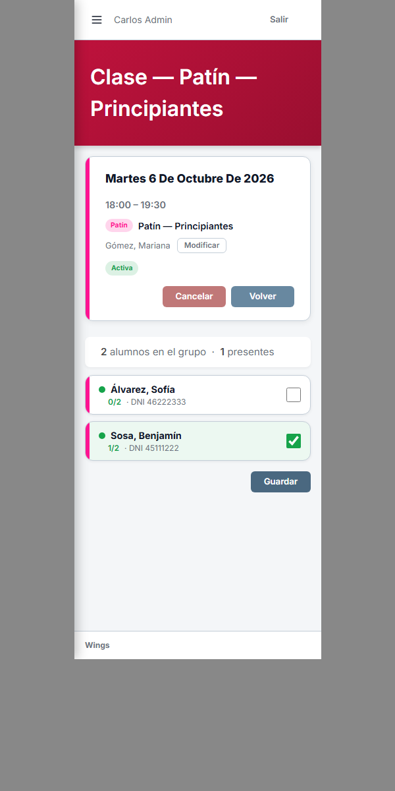
Antes: Una tabla con 358px de columnas fijas comprimía la columna "Nombre" a 0px en pantallas de 375px, volviéndola completamente invisible.
Después: En pantallas pequeñas se renderiza una lista de tarjetas compactas y limpias donde el nombre del subrubro destaca con badge de caja, detalles de permisos y botones Editar / Pausar a la derecha. En pantallas de escritorio se conserva la tabla tradicional.
Celular 375 px ANTES (Nombre cortado a 0px)
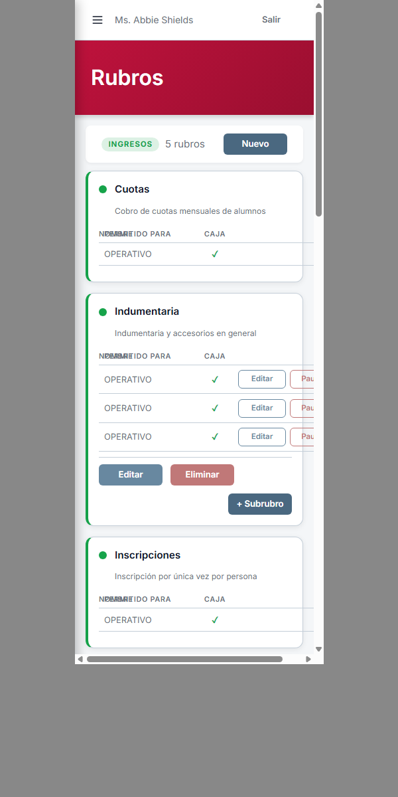
Celular 375 px DESPUÉS (Nombre visible y claro)
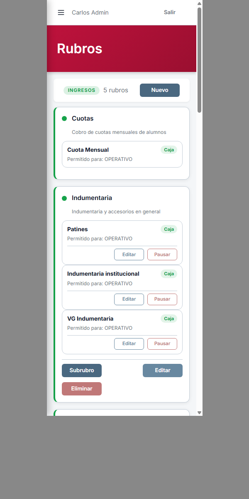
Antes: Los dos campos date de filtro eran idénticos sin indicar cuál era Desde y cuál Hasta. La tabla vacía no permitía validar filas y los botones estaban desalineados.
Después: Rótulos visibles "Desde" y "Hasta", botones Filtrar y Limpiar alineados a la derecha, tabla con scroll horizontal suave sin desbordar el viewport de la página y poblada con movimientos reales.
Celular 375 px ANTES (Campos idénticos)
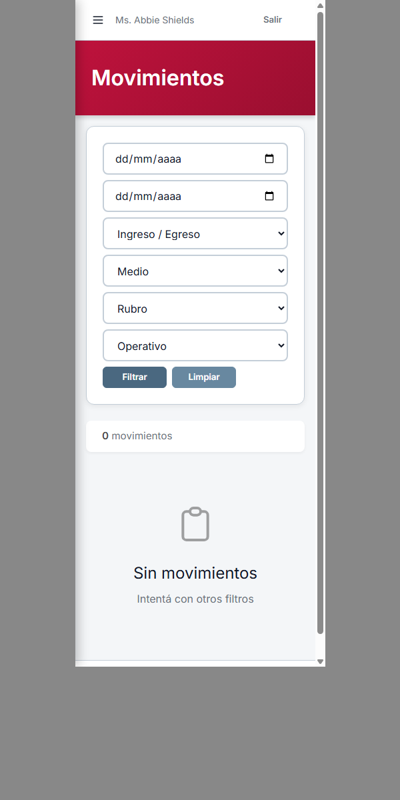
Celular 375 px DESPUÉS (Desde/Hasta claros)
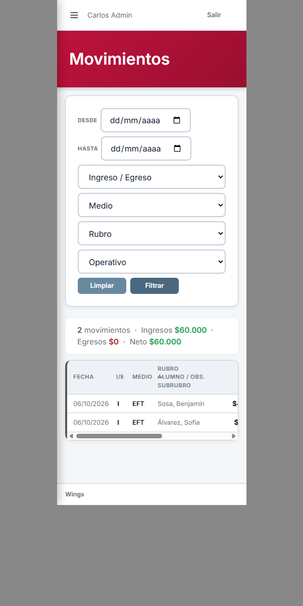